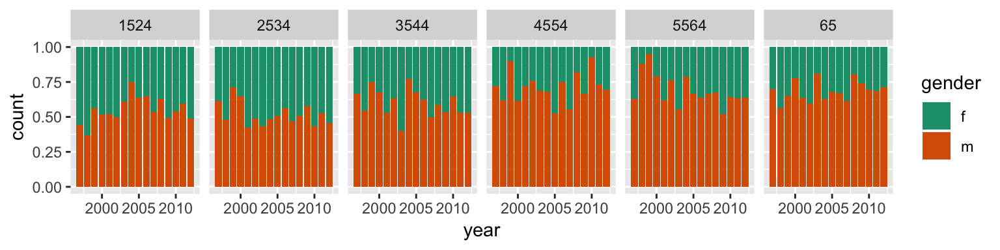
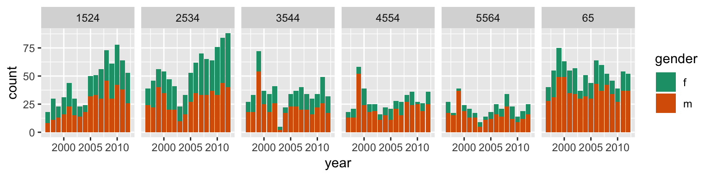
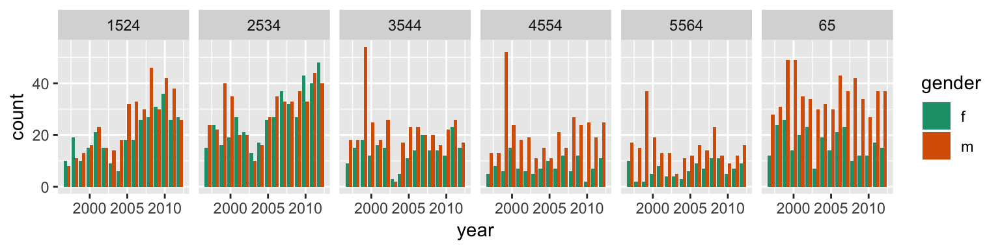
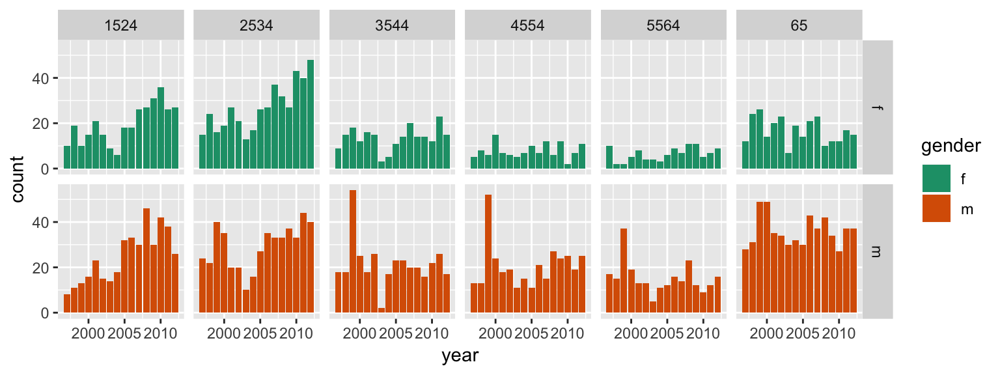
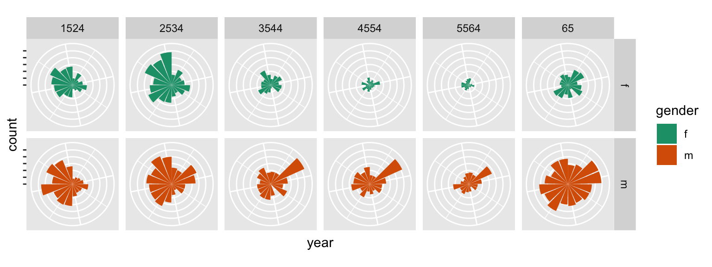
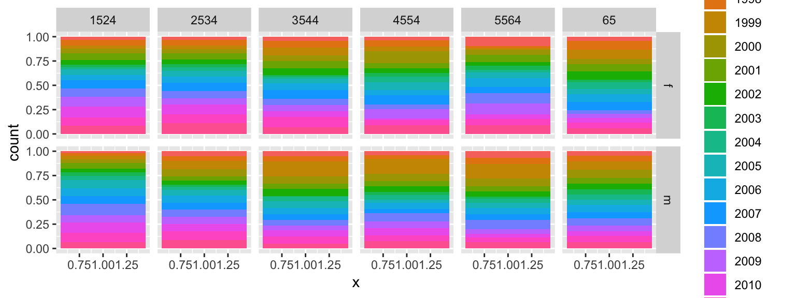
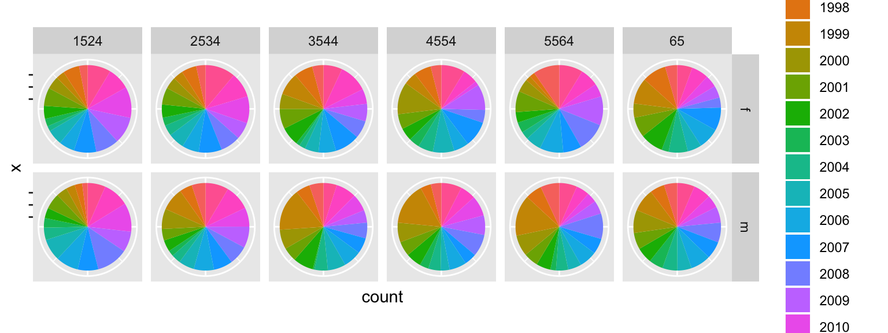

Basic data visualisation
Course web site
This is a link to the course web site, in case you need to go back and forth between tutorial and web materials: http://dmac.dicook.org
Overview
- Going from tidy data to a data plot, using a grammar
- Mapping of variables from the data to graphical elements
- Using different geoms
FOLLOW ALONG WITH THE NOTES
- Open your ETC1010
Rproj - Download the
Rmdfile from the class web site
Example: Tuberculosis data
This is current tuberculosis data taken from WHO, the case notifications table.
We put the data into tidy form, and select just the counts for Australia
library(tidyverse)
tb <- read_csv("data/TB_notifications_2018-03-18.csv") %>%
select(country, iso3, year, new_sp_m04:new_sp_fu) %>%
gather(stuff, count, new_sp_m04:new_sp_fu) %>%
separate(stuff, c("stuff1", "stuff2", "genderage")) %>%
select(-stuff1, -stuff2) %>%
mutate(gender=substr(genderage, 1, 1),
age=substr(genderage, 2, length(genderage))) %>%
select(-genderage)
tb_au <- tb %>%
filter(country == "Australia") %>%
filter(!(age %in% c("04", "014", "514", "u"))) %>%
filter(year > 1996, year < 2013)100% charts
ggplot(tb_au, aes(x = year, y = count, fill = gender)) +
geom_bar(stat = "identity", position = "fill") +
facet_grid(~ age) +
scale_fill_brewer(palette="Dark2")
100% charts, is what excel names these beasts. What do we learn?
Code structure
- Basic plot function is
ggplot - First argument provided is the name of the data,
tb_au - Variable mapping: year is mapped to x, count is mapped to y, gender is mapped to colour, and age is used to subset the data and make separate plots
- The bar geom is used,
geom_bar - We have already counted how many TB incidences are in each combination of categories, so
stat = "identity"says no need to compute the count - We are mostly interested in proportions between gender, over years, separately by age. The
position = "fill"option ingeom_barsets the heights of the bars to be all at 100%. It ignores counts, and emphasizes the proportion of males and females.
What do we learn?
- Focus is on proportion in each category.
- Across (almost) all ages, and years, the proportion of males having TB is higher than females
- These proportions tend to be higher in the older age groups, for all years.
Bar charts
ggplot(tb_au, aes(x = year, y = count, fill = gender)) +
geom_bar(stat = "identity") +
facet_grid(~ age) +
scale_fill_brewer(palette="Dark2")
What is different in the code description?
, position = "fill" was removed
What do we learn?
- Focus is on counts in each category.
- Different across ages, and years, counts tend to be lower in middle age (45-64)
- 1999 saw a bit of an outbreak, in most age groups, with numbers doubling or tripling other years.
- Incidence has been increasing among younger age groups in recent years.
Side-by-side barcharts
ggplot(tb_au, aes(x = year, y = count, fill = gender)) +
geom_bar(stat = "identity", position="dodge") +
facet_grid(~ age) +
scale_fill_brewer(palette="Dark2")
What is different in the code description?
, position="dodge" is used in geom_bar
What do we learn?
- Focus is on counts by gender, predominantly male incidence.
- Incidence among males relative to females is from middle ag on. There is similar incidence between males and females in younger age groups.
Separate bar charts
ggplot(tb_au, aes(x = year, y = count, fill = gender)) +
geom_bar(stat = "identity") +
facet_grid(gender ~ age) +
scale_fill_brewer(palette="Dark2")
What is different in the code description?
facet_grid(gender ~ age) + faceted by gender as well as age, note facet_grid vs facet_wrap
What do we learn?
- Its easier to focus separately on males and females.
- The 1999 outbreak mostly affected males.
- The growing incidence in the 25-34 age group is still affecting females but seems to be have stablised for males.
Pie charts?
ggplot(tb_au, aes(x = year, y = count, fill = gender)) +
geom_bar(stat = "identity") +
facet_grid(gender ~ age) +
scale_fill_brewer(palette="Dark2") +
coord_polar() +
theme(axis.text = element_blank())
Nope! That’s a rose chart. Bar charts in polar coordinates produce rose charts.
What is different in the code description?
coord_polar() + plot is made in polar coordinates, rather than the default Cartesian coordinates
What do we learn?
- Emphasizes the middle years as low incidence.
Rainbow charts?
ggplot(tb_au, aes(x = 1, y = count, fill = factor(year))) +
geom_bar(stat = "identity", position="fill") +
facet_grid(gender ~ age) 
A single stacked bar, in each facet. Year is mapped to colour.
What is the code doing?
- Notice how the mappings are different. A single number is mapped to x, that makes a single stacked bar chart.
- year is now mapped to colour (that’s what gives us the rainbow charts!)
What do we learn?
- Pretty chart but not easy to interpret.
Pie charts
ggplot(tb_au, aes(x = 1, y = count, fill = factor(year))) +
geom_bar(stat = "identity", position="fill") +
facet_grid(gender ~ age) +
coord_polar(theta="y") +
theme(axis.text = element_blank())
What is different in the code description?
coord_polar(theta="y") is using the y variable to do the angles for the polar coordinates to give a pie chart.
What do we learn?
- Pretty chart but not easy to interpret, or make comparisons across age groups.
Why?
The various looks of David Bowie
{kind=link}

- Using named plots, eg pie chart, bar chart, scatterplot, is like seeing animals in the zoo.
- The grammar of graphics allows you to define the mapping between variables in the data, with elements of the plot.
- It allows us to see and understand how plots are similar or different.
- And you can see how variations in the definition create variations in the plot.
Lab exercise
- Pull a copy of the Melbourne pedestrian sensor data for July, 2018, using the
rwalkrpackage, filter to keep two sensors “Melbourne Central”, “Flinders Street Station Underpass”. You can use the code below:
library(rwalkr)
library(lubridate)
ped <- walk_melb(from=dmy("01072018"),
to=dmy("31072018"))
ped <- ped %>%
filter(Sensor %in% c("Melbourne Central", "Flinders Street Station Underpass"))
save(ped, file="data/ped_July18.rda")Make a side-by-side boxplot of pedestrian counts by sensor. Describe what you learn.
Subset to Monday of the first week of Monash classes. Make line plots of Count by Time, separately for each sensor. Describe the differences in the pedestrian patterns at both locations.
Take the lab quiz!
(And use the rest of the lab time to coordinate with your group on the first assignment.)